Physics-Based Deep Learning (Smoke Simulation)
Project

Project
Use PC for better user interface experience.
Stable Fluids - Jos Stam (2D version)
Fluid simulation contains computer graphics techniques for generating realistic fluid animations such as water and smoke. In this project, we attempt to simulate a basic smoke model following the grid-based method described by Jose Stam in the “Stable Fluids” paper.
The velocity vector field of fluid (v⃗) is defined such that for every position x = (x, y), there is an associated velocity at time t:
U(x, t) = u(x, t), v(x, t), w(x, t).
We can think of this as a (multivariable) vector-valued function, whose input is a point (x,y), and the output is a vector with the same dimension as input.
The key to fluid simulation is to take steps in time and, at each time step, correctly determine the current velocity field. We will later see this done by solving a set of equations that describes the evolution of the velocity field over time, under a variety of forces.
The divergence is an operator, which takes in the vector-valued function defining this vector field, and outputs a scalar-valued function measuring the change in density of the fluid at each point.
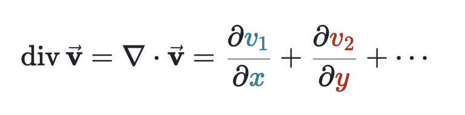Divergence can become negative, positive or zero. Negative divergence means a fluid flowing along the vector field defined by v⃗ would tend to become more dense at the point (x0 ,y0). Positive divergence means the fluid flowing along vector field becomes more sparse at a certain point. And finally, zero-divergence indicates that even though a fluid flows freely, its density (the degree of compactness of a substance) stays constant.
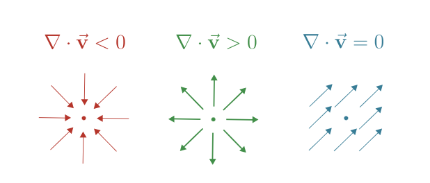Physics of fluid is governed by two fundamental principles, namely mass conservation, and momentum conservation. We use these principles to derive the Navier-stokes equation, that is the heart of all equations needed for fluid simulation here.
Continuity equation: The mass in the control volume can neither be created nor destroyed.
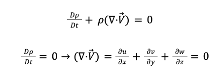ρ (rho) is the mas density [kg/m3].
Newton’s second law: In a closed system, one that does not exchange any matter with its surroundings and is not acted on by external forces, the total momentum remains constant.
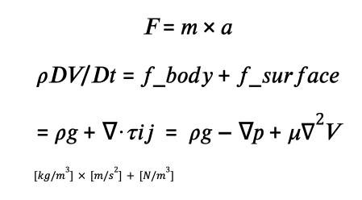𝑓_𝑏𝑜𝑑𝑦 is the applied gravitational force on the whole mass of fluid. The force applied per unit volume (force density) is then equal to the mass density (ρ) times the acceleration due to gravity: f = ρg
𝑓_𝑠𝑢𝑟𝑓𝑎𝑐𝑒 is expressed through pressure and viscous forces (which we will go into details soon).
First thing first, we need to derive Navier-Stokes (momentum) equation for fluids based off of the following assumptions:
Given a 3 dimensional space, fluids are subject to forces from all 3 directions. Here, we only consider the X-components of velocity of the fluid. Similar approach can be applied to get the results for Y and Z directions.
To find the acceleration of fluid in move, we use the famous formula
F = ma:
As discussed in the conservation of momentum section, there are 3 forces to be considered (per volume basis):
The force exerted by gravity is self-explanatory. Now let's move to the internal forces due to Pressure and viscosity.
Fluid pressure is a measurement of the force per unit area. Fluid pressure can be caused by gravity, acceleration, or forces in a closed container. Since a fluid has no definite shape, its pressure applies in all directions. The net force due to pressure in the x-direction is given by:
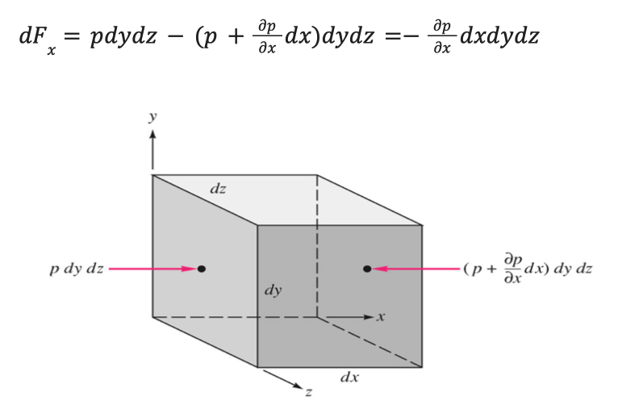As you can see from the above figure, the pressure forces are acting on the front and back surface of the cubic volume element (along the x-axis), because the forces due to pressure are always exerted perpendicular to any surface (and we are only considering the x-axis here).
These pressure forces basically represent normal stresses and are therefore denoted by the Greek symbol σ instead of p. In addition to the pressure forces, we are going to see that viscosity-related forces can also act perpendicular to the surfaces and contribute to normal stress.
In a similar manner, net forces acting in y‐ and z‐directions can be calculated. The total net force vector, due to pressure then is:
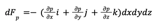The term in the parentheses is the negative vector gradient of pressure and dx dy dz = dV, is the volume of the element. Therefore, one can write:
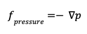**Note: When the fluid is at rest, pressure gradient must be balanced by gravity force. When at move, it should be balanced by gravity, viscosity and other effects in the fluid.
Viscous force is a measure of a fluid's resistance to flow. In many fluids, the flow velocity is observed to vary linearly from zero at the bottom to u at the top. Moreover, the magnitude of the force, F, acting on the top plate is found to be proportional to the speed u and the area A of each plate, and inversely proportional to their separation height h:
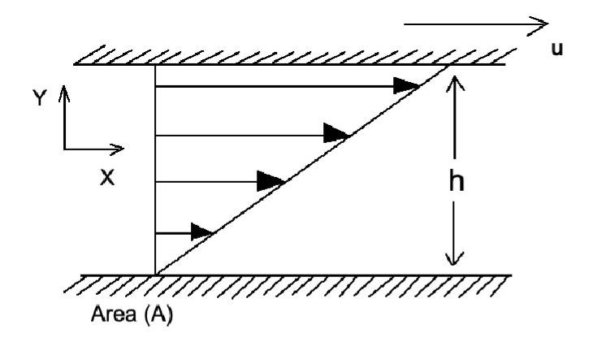 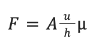The proportionality factor is the dynamic viscosity of the fluid, often simply referred to as the viscosity. It is denoted by the Greek letter mu (μ) with the unit of [N.s/m2].
The aforementioned ratio u/h is called the rate of shear deformation or shear velocity, and is the derivative of the fluid speed in the direction perpendicular to the plates. If the velocity does not vary linearly with h, then the appropriate generalization is:
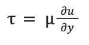 τ is the shear stress [N/m2].
∂u/∂y is the local shear velocity [m/s/m].
Viscous Stress Tensor:
In three-dimensional flow, the velocity or velocity gradient changes in all three directions. Due to the viscosity, the resulting shear stress is no longer only due to the velocity gradient in a certain direction, but also to a velocity gradient perpendicular to it.
This situation is similar to the deformation of a fluid element. Imagine shear forces that deform the fluid element. In this way, inclined surfaces are formed so that the shear forces acting on the surface now affect another spatial dimension. In fact, in fluids, the stresses acting in additional spatial directions are not due to an actual deformation (magnitude of shearing), but to the shear rate.
This insight leads to the introduction of a so-called viscous stress tensor, which describes the stresses (normal and shear stresses) acting on a fluid element:
The stress on a surface pointing in the −i direction is the negative of the stress on a surface in the +i direction, etc.
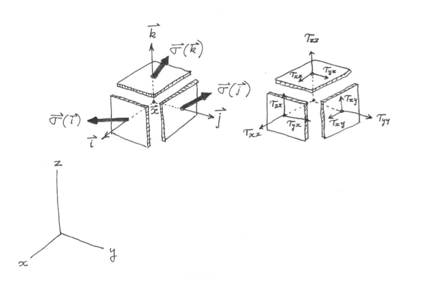Writing the reference stresses in terms of their components, we obtain:
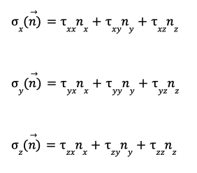Therefore, the stress σ⃗ (n⃗) acting at x⃗, t on a surface with any arbitrary orientation n⃗ can be expressed in terms of the nine reference stress components:
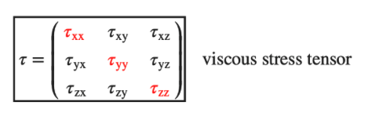For an isotropic incompressible Newtonian fluid with constant [dynamic] viscosity, the components of the viscous stress tensor τ can be determined from the viscosity η as follows:
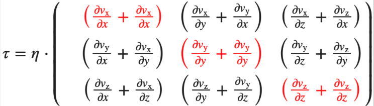The rate of angular (or shear) strain in the fluid particle as seen by an observer sitting on it is:
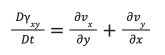The Newtonian assumption requires that:
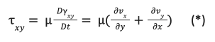τxx , τyx and τzx represent the x, y, and z components of the stress acting on the surface whose outward normal is oriented in the positive x-direction.
Due to the viscosity η, shear forces or shear stresses in x-direction act on the lateral surfaces of the fluid element and on the top and bottom surfaces. In contrast to the normal stresses, which are directed perpendicular to the surface, the shear stresses act parallel to the surface.
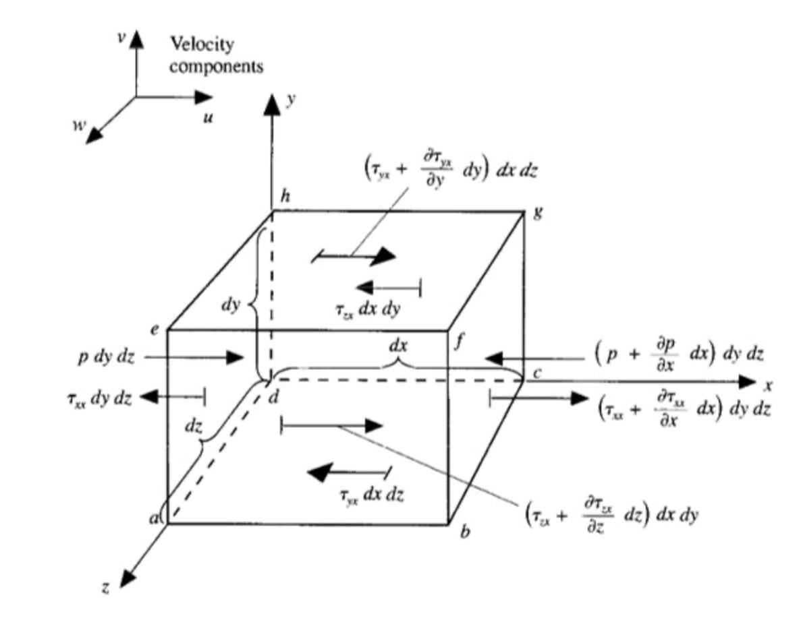Forces acting on the cross-sectional area of differential element of the fluid (unit: [F/m2] or Pascals):
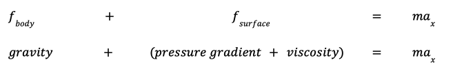Equating the applied forces found in the pressure gradiant and viscosity sections (shown in the above diagram), we get:
Simplifying right-hand side:
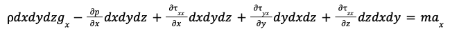Dividing both sides by volume:
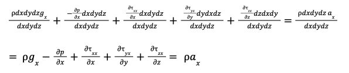Re-writing our viscous forces using equation (*):
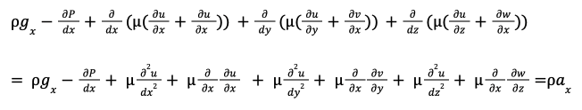Re-ordering:
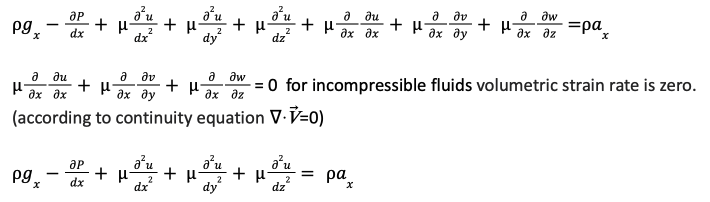And from the material derivative expansion we know that the acceleration can be rewritten as follows:
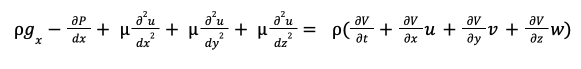Factoring out the dynamic viscosity, with the units:
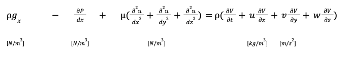**Note: The force density, or force per unit volume, f, is the net force (F) on a region of matter divided by the volume (V) that contains it: f = F/V
Final form (all directions: x, y, z):
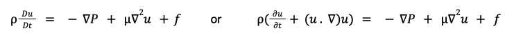Dividing by ρ:
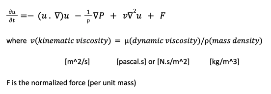In order to consolidate the namings used in our formulas, we will stricktly follow the rules given below to represent vaariables:
scalar → lower-case, italic: a
scalar field → upper-case: A(x, y, z)
vector → lower-case, boldface: a
vector field → upper-case, boldface: A
Following is a list of our formulas, written in the format mentioned above.
Helmholtz-Hodge Decomposition Theorem
From Jos Stam's paper we find that N-S equations are perfect for fluid flow simulation. Given velocity and pressure at t=0, we need to use N-S to find their values at t > 0. N-S equations are supplemented with boundary conditions:
Fixed boundary condition: fluid lies in some bounded domain D. Boundary conditions are given by a function uD defined on the boundary ∂D of the domain. Condition should be such that the normal component of the velocity field is zero at the boundary, in other words, no matter should traverse wall: u⃗ . n̂ = 0
Helmholtz-Hodge Decomposition Theorem says a vector field w on a region in space, in our case a plane D, can be uniquely decomposed in the form:

Where u has zero divergence and is parallel to ∂D (boundary of the region); that is, u⃗ . n̂ = 0 on ∂D. P is a scalar field.
Any vector field is the sum of a mass conserving field and a gradient field. This result allows us to define an operator P which projects any vector field w onto its divergence free part u = Pu . Multiplying both sides of the equation above by “∇”:
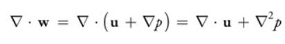But since Δ . u = 0, this simplifies to ∇2p = ∇ . w (poisson equation).
A solution to this equation is used to compute the projection u:
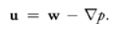Applying the same projection operator to the Navier-Stokes equations:
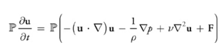Because u is divergence-free, so is the derivative on the left-hand side, so P(∂u / ∂t) = ∂u / ∂t.
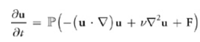Where we use the fact that Pu = u and P∇p = 0.
**Note on p (pressure): We can shrink the size of our "container" down to an infinitely small point, and the pressure has a single value at that point. Which means pressure is a scalar quantity, not a vector quantity. It has a magnitude but no direction associated with it. Pressure acts in all directions at a point inside a gas.
Given the initial state of the velocity field, u0 = u(x, 0), we can complete the implementation over the time span Δt in four steps.
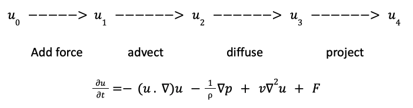The solution at time t + Δt is given by the velocity at the previous timestep.
Forces are applied at the beginning of each timestep.
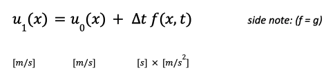“A disturbance somewhere in the fluid propagates according to the expression -(u . ∇)u. Therefore, to obtain the velocity at a point X at the new time t + Δt we backtrace the point X through the velocity field u1 over a time Δt. This defines a path p(x, s) corresponding to a partial streamline of the velocity field. The new velocity at the point X is then set to the velocity that the particle, now at X , had at its previous location a -Δt time ago.”
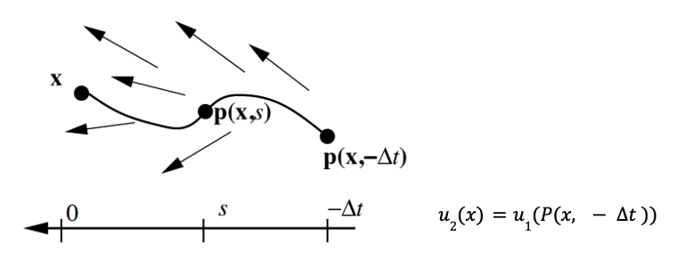**Note: Interpolate the old value of P from the old values on the grid, when the start point is out of boundary.
AX = B, Jacobi iteration technique. The most straightforward way of solving the diffusion equation is to discretize the diffusion operator ∇2 and then use the implicit method.
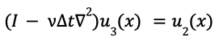Use the poisson equation to get pressure. subtract pressure gradient from the intermediate velocity field u3(x) to get the new divergence free velocity vector field.
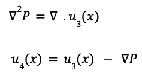Link to the GitHub repo can be found here.
TODO